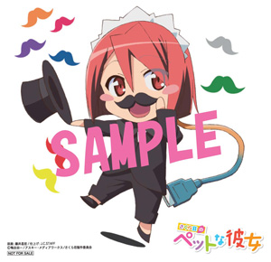
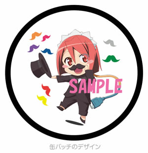

日本大学芸術学部芸術祭×さくら荘のペットな彼女 ～変人たちが変人たちの集まる場所へやってくる！～

水明芸術大学付属高校に通う奇人変人の学生たちが集う「さくら荘」寮を舞台に描かれた「さくら荘のペットな彼女」が、実在する日本大学芸術学部とタイアップ企画を実施することになりました！
メインキャスト出演のイベントや、コラボカフェ営業、貴重な制作資料展示などを実施予定！！
アニメの登場人物たちに負けず劣らずの才能にあふれた学生の皆さんや、リアルな芸術大学の雰囲気に触れつつ、作品の世界も感じられるイベント満載。ぜひ遊びに来てください！
日程／11月2日（金）～4日（日）
会場／日本大学芸術学部（江古田キャンパス） 〒176-8525 東京都練馬区旭丘2-42-1
アクセス／西武池袋線各駅停車にて江古田駅下車 北口より徒歩1分
タイアップ内容会場／日本大学芸術学部（江古田キャンパス） 〒176-8525 東京都練馬区旭丘2-42-1
アクセス／西武池袋線各駅停車にて江古田駅下車 北口より徒歩1分
- １.ステージイベント「さくら荘のペットな彼女講座」
- メインキャストが出演するイベント開催！アニメ制作秘話などはもちろん、日芸の学生の皆さんが、「さくら荘」チームに挑むコーナーなどを企画中！
学生の方だけでなく、外部の方々も無料で参加できるイベント、ぜひ遊びに来てください！ - 日時／11月3日（土）開場／12:20 開演／12:50
- 会場／日本大学芸術学部江古田キャンパス 大ホール
- 出演者／松岡禎丞さん（神田空太役）、茅野愛衣さん（椎名ましろ役）、中津真莉子さん（青山七海役）、高森奈津美さん（上井草美咲役）
- 参加方法
完全抽選制です。下記URLにアクセスいただき必要事項にお答えください。
※9/25まではそれぞれのフォームにはアクセスできません。
- 応募時のご注意
・応募メールはお一人様１通でお願いします。お一人様での多数の応募は抽選から外させていただきます。
・転売を目的としたチケットお求めは固く禁じております。
・出演者への質問に関しましてはご自由にご記入ください。
・ご記入された方の質問を、トークショー内で出演者に向けて質問される可能性があります。
・当日のイベント観覧方法については、当選通知メールにてご連絡させていただきます。
・会場までの交通費、宿泊費などは、ご当選者様の負担となります。
・応募時にご提供いただきました個人情報は、当イベント運営目的の範囲内で利用させていただきます。その他の目的では一切利用いたしません。
・日本大学芸術学部の学生の方は、参加応募方法が異なりますので、詳しくは芸術祭本部までお問い合わせください。 - 当選者発表／10月22日（月）に当選者の方にのみメールにてご連絡予定です。
- ２.さくら荘カフェ
- 大学内の一部エリアをジャックし、さくら荘カフェを展開します。お菓子やお茶を販売予定です！
貴重な制作資料なども展示します。皆さん、ぜひ遊びに来てくださいね！ - 日時／11月2日（金）13時～17時
11月3日（土）11時~17時
11月4日（日）11時～17時 - 場所／日本大学芸術学部江古田キャンパス 東棟２F学生ホール
- 販売メニュー
・特製バームクーヘン＜チョコ・バナナ・メープル・紅茶の4種類＞ 各200円
・コーヒー＜ホットor アイス＞ 各200円
・紅茶＜ホット or アイス＞ 各200円 - 購入者特典／芸術祭とメイドちゃんのコラボシール
 - 購入者様へのご注意事項
・特典は数量限定ですので、無くなり次第終了いたします。
・少額紙幣(1,000円)または小銭にてお願いいたします。
・複数お持ち帰りのキャリーキット、バッグはございません。
- ３.スタンプラリー制覇で特製缶バッチゲット！
- 学祭期間中に江古田キャンパス内で実施しているスタンプラリーをすべて回り終えると、このタイアップ企画のために描き下ろしたイラストがあしらわれた缶バッチがもらえます！
キャンパス散策を楽しみながら、クリアを目指してくださいね！
 - 日時／11月2日（金）～4日（日）の開催期間中いつでも
- スタンプラリー台紙配布場所
日本大学芸術学部江古田キャンパス入口インフォメーションコーナー
※缶バッチには数に限りがございますのでご注意ください。
- ４.「さくら荘のペットな彼女」学祭ラジオ出演
- この芸術祭の間に学内で実施されるラジオ番組に、キャストの皆さんがお邪魔します！
どんなトークが繰り広げられるかお楽しみに！ - 日時／11月3日（土）14:25～14:45頃
- 出演者／松岡禎丞さん（神田空太役）、茅野愛衣さん（椎名ましろ役）、中津真莉子さん（青山七海役）、高森奈津美さん（上井草美咲役）
- 会場／日本大学芸術学部江古田キャンパス ギャラリー棟
- 参加方法
【１】会場内の着席エリア
ステージイベント「さくら荘のペットな彼女」ステージに応募いただき、抽選に漏れた方の中からさらに抽選をさせていただきまして、当選者を決定させていただきます。
【２】会場外の観覧自由立ち見エリア
観覧で自由にご覧いただけるエリアはチケット等は必要ございませんので、
お立ち寄りいただければと思います。
※ただし、混雑が予想される際は多少人員整理をさせていただく可能性がございますので予めご了承ください。
※イベント内容や出演者は急遽変更になる可能性もございますので、あらかじめご了承ください。 - 当選者発表／10月22日（月）に当選者の方にのみメールにてご連絡予定です。
その他、まだまだ企画計画中！
最新情報は随時公開しますので、お楽しみに☆
最新情報は随時公開しますので、お楽しみに☆
「日芸2012年度芸術祭本部」公式Twitter @geisai12